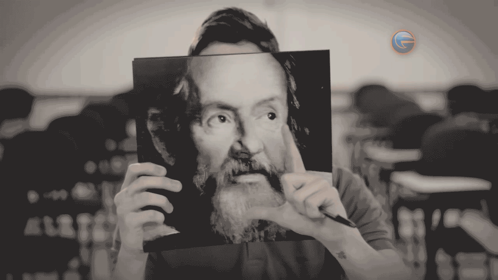

UMA ESCOLHA
certa transforma o mundo
Faculdade FG — Filme Manifesto
DIREÇÃO DE CRIAÇÃO // COMERCIAL INSTITUCIONAL
Estratégia & Conceito
As grandes mentes da história começaram com uma simples escolha.
Einstein quase escolheu a música. Karl Marx quase seguiu a advocacia pura. Galileu Galilei hesitou antes de mudar os olhos da física sobre o firmamento. A campanha para a Faculdade FG celebra o momento sagrado da escolha profissional do estudante, mostrando que as suas decisões têm o poder de moldar e revolucionar as gerações futuras.
TRANSFORMAR A REALIDADE ATRAVÉS DO ENSINO
Vestibular & Campanhas de Alto Impacto

Galileu Galilei — Take do Comercial
CONTEÚDO DINÂMICO // CINEMATOGRÁFICO LOOP

Outdoor Einstein — "Se não fosse físico..."
MOCKUP URBANO // VEICULAÇÃO OOH

Anúncio Karl Marx — "Filosofia & Escolhas"
ANÚNCIO EDITORIAL // REVISTA & IMPRESSO
Fim do Case Study
VOLTAR AOS PROJETOS